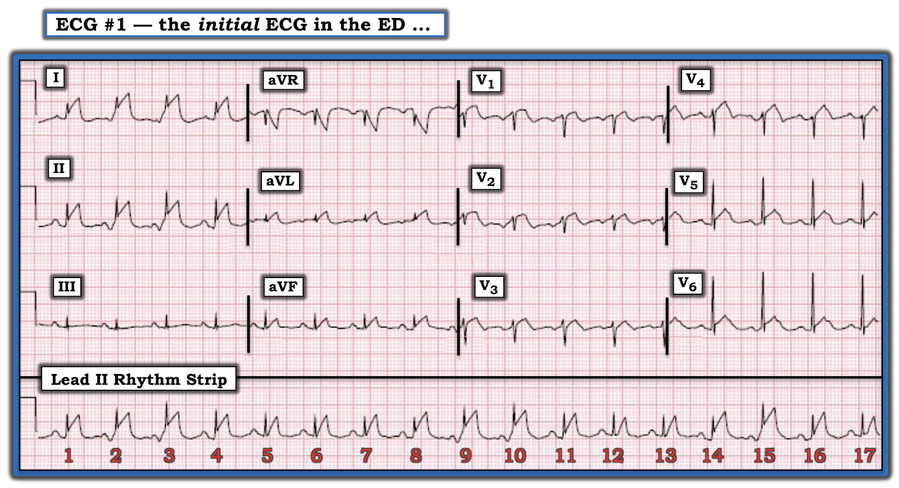
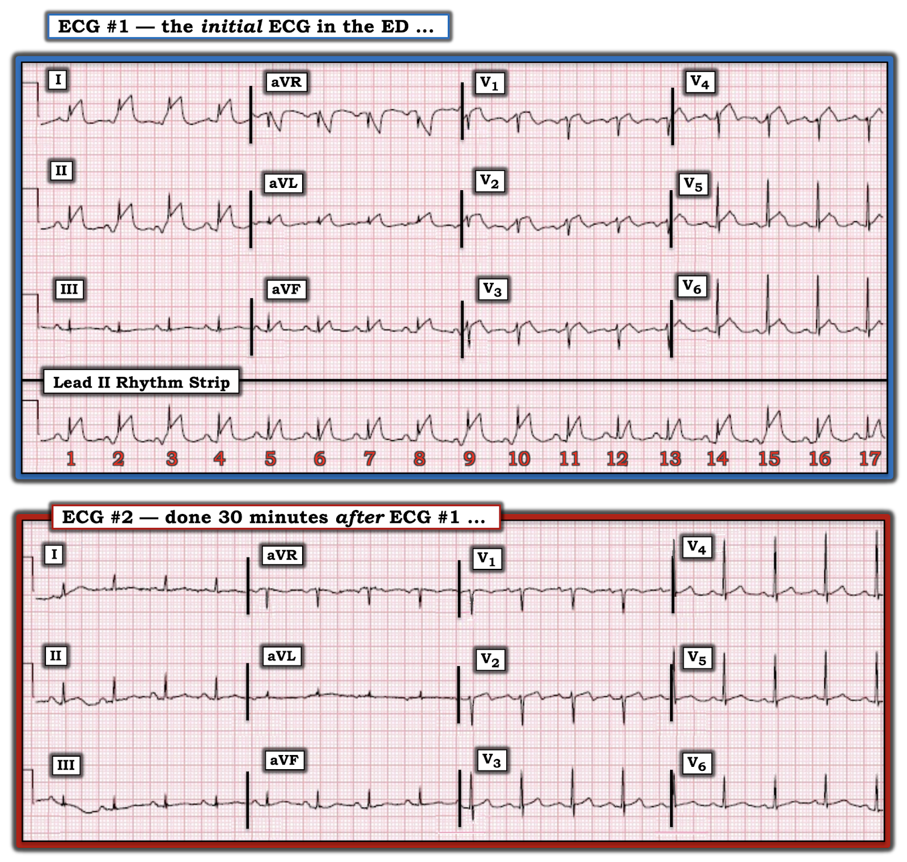
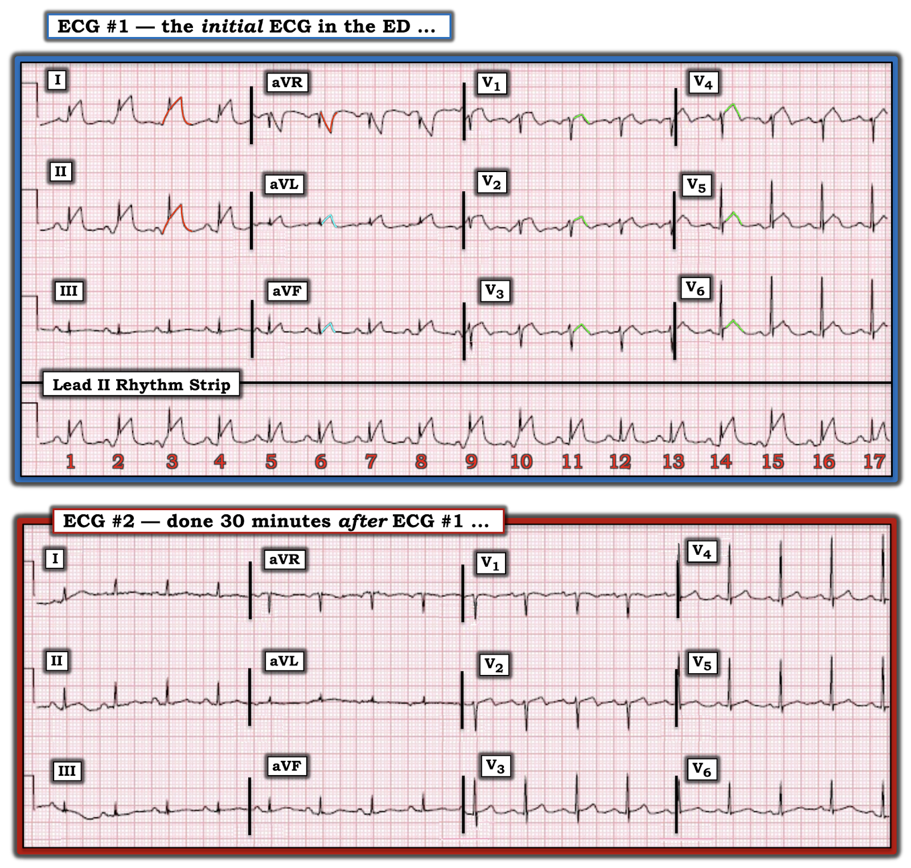
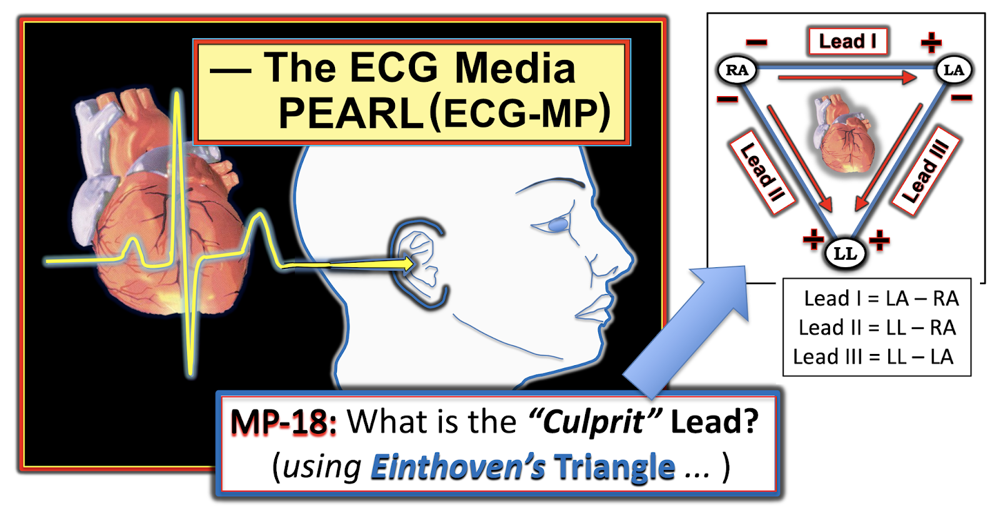
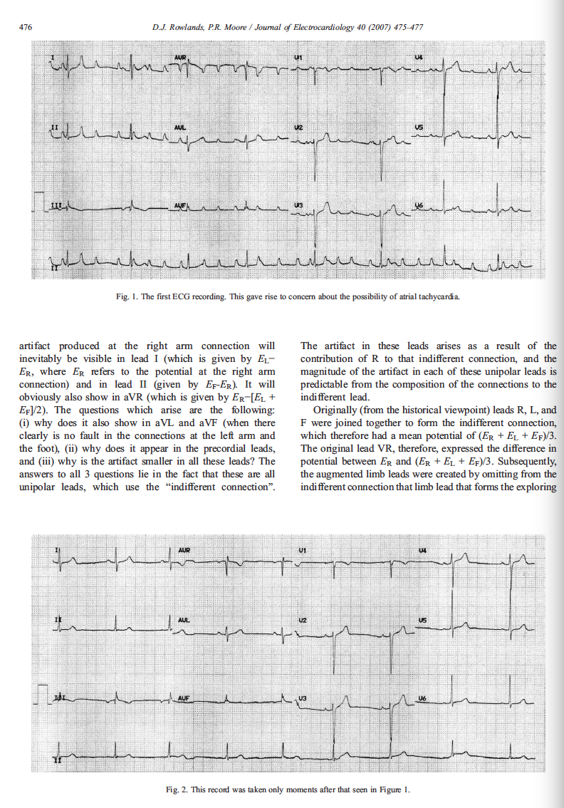

ECG Blog #201 — Có nên kích hoạt phòng thông tim?
Điện tâm đồ trong Hình-1 được ghi ở một phụ nữ ngoài 80 tuổi có tiền sử đột quỵ gần đây. Bà than khó chịu vùng thượng vị khi đang ở cơ sở phục hồi chức năng.
- Dựa trên điện tâm đồ này — Có nên kích hoạt phòng thông tim (cath lab) không?


Suy nghĩ ban đầu của tôi khi nhìn bản ghi này:
Ban đầu tôi lo ngại về khả năng ST chênh lên rõ rệt ở chuyển đạo I và II — cũng như ST chênh lên ở mức độ nhẹ hơn ở chuyển đạo aVL và ở các chuyển đạo trước tim.
- Tôi chú ý tới hiện tượng đường đẳng điện nâng lên, bắt đầu trước phức bộ QRS ở 2 chuyển đạo có ST chênh lên nhiều nhất này — mà tôi nghĩ trông giống hình ảnh Dấu hiệu Mũ gai (Spiked Helmet Sign) (Xem LINK tới bài ngày 28 tháng 6 năm 2020 của Dr. Smith ở dưới để đọc phần tôi ôn lại về Dấu hiệu Mũ gai).
- Tôi thấy cả hình dạng lẫn sự phân bố của ST chênh lên ở chuyển đạo I và II trên điện tâm đồ #1 đều kỳ lạ. Dù vậy — tôi nghĩ có thể cần thông tim để làm rõ bệnh cảnh.
Diễn tiến ca bệnh:
Điện tâm đồ thứ 2 được ghi 30 phút sau điện tâm đồ #1. Để dễ theo dõi — tôi trình bày cả hai bản ghi này theo đúng trình tự thời gian trong Hình-2.
- Dựa trên 2 điện tâm đồ trong Hình-2 — Bạn có còn muốn kích hoạt phòng thông tim không?
- TẠI SAO có hoặc tại sao không?


BÌNH LUẬN:
Quyết định được đưa ra là không kích hoạt phòng thông tim. Người ta ghi nhận rằng các biến dạng sóng bất thường thấy trên điện tâm đồ #1 không còn xuất hiện trên điện tâm đồ ghi lại 30 phút sau (Hình-2). Trong số các thăm dò thực hiện lúc đó:
- Siêu âm tim tại giường cho thấy chức năng thất trái (LV) tốt, không có rối loạn vận động thành.
- Troponin X3 lần không tăng đáng kể.
- Điện tâm đồ thứ 3 ghi ~2 giờ sau điện tâm đồ #2 vẫn không thay đổi so với điện tâm đồ #2.
CÂU HỎI: BẠN giải thích thế nào về sự thay đổi hình ảnh mà chúng ta thấy trong Hình-2 giữa điện tâm đồ #1 và điện tâm đồ #2?
TRẢ LỜI: Xét việc các biến dạng sóng ST-T bất thường thấy trên điện tâm đồ #1 đã hết hoàn toàn, cùng với siêu âm tim tại giường bình thường và troponin xét nghiệm nhiều lần âm tính — người ta cho rằng các biến dạng thấy trên điện tâm đồ #1 là hậu quả của Nhiễu sinh ra do dây điện cực RA tiếp xúc với một động mạch đang đập (đôi khi được gọi là "PTA" = nhiễu do mạch đập — Pulse-Tap Artifact).
===========================
- THÚ NHẬN: Thỉnh thoảng được một bài học khiêm tốn cũng là điều tốt. Tôi hoàn toàn thừa nhận rằng ban đầu tôi đã bỏ sót chẩn đoán trong ca này! Nhìn lại — lẽ ra tôi phải nhận ra ngay nhiễu là nguyên nhân — nhưng tôi đã không nhận ra ...
===========================
BÀN LUẬN:
Ca hôm nay là một ví dụ tuyệt vời cho thấy khi bạn gặp một hiện tượng điện tâm đồ lần thứ 1 — nó có thể bị bỏ qua mà không nhận ra. Nhưng một khi đã biết về hiện tượng đó — việc nhận ra nó về sau trở nên DỄ DÀNG!
- Thực ra tôi đã biết rõ hiện tượng tiếp xúc với một động mạch đang đập gây ra bất thường sóng ST-T rõ rệt. Nhưng trước đây tôi chưa từng gặp một ví dụ nào về hiện tượng này đánh lừa được như trong ca hôm nay. Vì vậy — tôi đã rơi vào “bẫy”.
ĐIỂM THEN CHỐT (PEARL) #1: Nhiễu là thường gặp trong thực hành lâm sàng. Cách TỐT NHẤT để không bỏ sót nhiễu — là ý thức được nó thực sự thường gặp đến mức nào! Tôi xin nêu thêm các điểm sau về ca hôm nay:
- Manh mối thứ 1 gợi ý nhiễu — là hình dạng của các đoạn ST chênh lên rất kỳ quái. Nó thẳng một cách bất thường — và trở nên nhọn đến bất ngờ ở đỉnh tại nhiều chuyển đạo. Ở chuyển đạo duy nhất có sóng T âm ( = chuyển đạo aVR) — phần sâu nhất của sóng T đảo ngược cũng nhọn đến bất ngờ. Điều này không phù hợp sinh lý. Nói chung, khi các biến dạng sóng trên điện tâm đồ trông kỳ quái và “phi sinh lý” — nhiều khả năng các biến dạng đó không có thật!
- Vị trí của 2 chuyển đạo chi có ST chênh lên nhiều nhất này ( = chuyển đạo I và chuyển đạo II) — không phù hợp giải phẫu với những gì có thể chờ đợi ở nhồi máu cơ tim (MI) cấp, nhất là khi không có ST chênh xuống soi gương (reciprocal) ở các chuyển đạo chi khác. Thật khó hình dung động mạch vành nào bị tắc lại có thể gây ST chênh lên ở chuyển đạo chi chỉ giới hạn ở chuyển đạo I và II.
- Hình dạng sóng ST-T kỳ quái ở mọi chuyển đạo có ST chênh lên (và cả ở chuyển đạo aVR có sóng T đảo ngược) — xuất hiện ở một khoảng cố định so với phức bộ QRS đi trước (Hình-3). Điều này cho biết bất kể thứ gì tạo ra các biến dạng này đều phải liên quan đến sự co bóp của tim (và/hoặc đến mạch đập của động mạch)!


ĐIỂM THEN CHỐT (PEARL) #2: Sự phân bố của các biến dạng sóng ST-T kỳ quái tuân theo chính xác vị trí và mức độ biến dạng biên độ tương đối mà Tam giác Einthoven dự đoán.
- ST chênh lên kỳ quái xấp xỉ bằng nhau ở 2 trong số các chuyển đạo chi (tức là, ở chuyển đạo I và II) — và hoàn toàn không thấy ở chuyển đạo chi thứ 3 (tức là không hề thấy nhiễu ở chuyển đạo III). Theo Tam giác Einthoven (Xem hình bên dưới của ECG Media Pearl hôm nay — trong đó có Tam giác Einthoven ở góc bên phải) — việc thấy nhiễu có biên độ đoạn ST bằng nhau ở Chuyển đạo I và Chuyển đạo II giúp khu trú chi "thủ phạm" ở điện cực RA ( = Right Arm — tay phải).
- Việc không có chút nhiễu nào ở chuyển đạo III phù hợp với điều này — bởi vì chuyển đạo chi lưỡng cực chuẩn III được dẫn xuất từ hiệu điện thế giữa điện cực LL ( = Left Leg — chân trái) và LA ( = Left Arm — tay trái), vốn sẽ không bị ảnh hưởng nếu nguồn nhiễu là tay phải.
- Như tôi trình bày chi tiết trong Audio Pearl MP-18 bên dưới — việc thấy nhiễu có biên độ lớn nhất ở chuyển đạo aVR đơn cực khẳng định rằng tay phải là chi “thủ phạm”.


ECG Media PEARL #18 hôm nay (7:45 phút Audio) — Về cách nhận ra Nhiễu — và — dùng Tam giác Einthoven để xác định trong vòng vài giây chi “thủ phạm” gây ra Nhiễu trên điện tâm đồ của bạn.

============================================
LƯU Ý: Dưới đây tôi in lại trong Hình 4, 5 và 6 — bài báo 3 trang của Rowlands và Moore (J. Electrocardiology 40: 475-477, 2007) — đây là bài tổng quan HAY NHẤT tôi từng đọc về cơ chế sinh lý giải thích độ lớn tương đối của biên độ các biến dạng do nhiễu khi nguyên nhân gây nhiễu là một chi duy nhất. Các nguyên lý này được minh hoạ bằng các biến dạng tô màu trong Hình-3:
- Như các phương trình ở trang 477 trong bài của Rowlands và Moore đã chỉ ra: i) Biên độ nhiễu là lớn nhất ở điện cực tăng thế đơn cực của chi “thủ phạm” — tức là chuyển đạo aVR trong Hình-3 (viền ĐỎ của sóng T đảo ngược ở chuyển đạo này); và, ii) Biên độ nhiễu ở 2 chuyển đạo tăng thế còn lại (tức là chuyển đạo aVL và aVF) bằng khoảng 1/2 biên độ nhiễu ở chuyển đạo aVR (viền XANH LÁ của các sóng ST-T gấp góc nhọn ở chuyển đạo aVL và aVF).
- Tương tự — biên độ các biến dạng do nhiễu ở 6 chuyển đạo trước tim đơn cực trong Hình-3 cũng giảm đáng kể so với biên độ lớn nhất thấy ở chuyển đạo I, II và aVR (viền XANH LÁ của các sóng ST-T gấp góc nhọn ở từng chuyển đạo trong 6 chuyển đạo trước tim).
ĐIỂM THEN CHỐT (PEARL) #3: Manh mối quan trọng cuối cùng cho thấy nhiễu là nguyên nhân của các biến dạng sóng ST-T kỳ quái mà chúng ta thấy trên điện tâm đồ #1 — nằm ở dải nhịp chuyển đạo II dài phía dưới bản ghi!
- BẠN có để ý nhiễu lúc có lúc không như thế nào trên dải nhịp chuyển đạo II dài này không? Theo đó, chúng ta thấy nhiễu lớn nhất ở các nhát #2, 3, 9, 10 và 15 trên dải nhịp chuyển đạo II dài này (bao gồm cả biến dạng nâng đường nền bắt đầu ngay trước phức bộ QRS của các nhát này — thứ tạo ấn tượng sai lệch về một Dấu hiệu Mũ gai).
- Ngược lại — không hề có ST chênh lên do nhiễu ở các nhát #5, 6, 12, 13 và 17 — và có mức biến dạng do nhiễu trung bình ở các nhát còn lại. Mức độ nhiễu thay đổi từ nhát này sang nhát khác như vậy phù hợp với việc điện cực RA chỉ tiếp xúc từng lúc với động mạch đang đập. Tôi không nghĩ ra được lý do sinh lý nào ngoài chính nhiễu để giải thích sự thay đổi hình ảnh sóng ST-T theo từng nhát này.
ĐIỀU CỐT LÕI: Bạn sẽ gặp nhiễu thường xuyên trong thực hành thực tế. Chỉ cần luyện tập một chút, bạn có thể ngay lập tức BIẾT chắc chắn 100% rằng các biến dạng kỳ quái trên một bản ghi như bản ghi này là hậu quả của nhiễu, và liên quan tới mạch đập của động mạch ở một trong các chi.
- Không có gì khác cho thấy mối liên hệ cố định với phức bộ QRS theo các quan hệ toán học mô tả ở trên, trong đó biến dạng do nhiễu lớn nhất và bằng nhau ở 2 trong 3 chuyển đạo chi (và không hề có nhiễu ở chuyển đạo chi thứ 3) — trong đó nhiễu lớn nhất ở chuyển đạo tăng thế đơn cực sẽ thấy ở điện cực của chi chung cho cả 2 chuyển đạo chi có nhiễu lớn nhất (theo Tam giác Einthoven).




-------------------------------------------------------------------------
Lời cảm ơn: Xin cảm ơn 林柏志 = Po-Chih Lin (Đài Loan) đã cung cấp các bản ghi và ca bệnh này.
-------------------------------------------------------------------------
==============================
Các bài ECG Blog khác liên quan tới ca hôm nay:
- Bài ngày 28 tháng 6 năm 2020 trên Dr. Smith’s ECG Blog — để ôn lại về Dấu hiệu Mũ gai. Vui lòng cuộn xuống cuối trang ở link này để xem Bình luận của tôi (My Comment).
Về việc nhận ra NHIỄU trên điện tâm đồ:
- ECG Blog #148 — Nhiễu giả rung thất (VFib).
- ECG Blog #44 — Nhiễu do run Parkinson
- ECG Blog #139 — Nhiễu giả cuồng nhĩ (AFlutter).
- ECG Blog #132 — Thêm ví dụ nhiễu giả VT-VFib.
- Bài tổng quan ngắn của Tom Bouthillet về một số nguyên nhân thường gặp gây nhiễu.
Cuối cùng — tôi dẫn link tới một số Ca minh hoạ lấy từ Dr. Smith’s ECG Blog. Với mỗi bài này — Vui lòng cuộn xuống cuối trang để xem Bình luận của tôi (My Comment). Các ca này giúp hiểu sâu hơn về cách đánh giá NHIỄU:
- Bài ngày 27 tháng 9 năm 2019 trên Dr. Smith’s ECG Blog — trong đó tôi dùng bài báo của Rowlands & Moore, cùng các công thức nêu ở trên để nhận ra chi “thủ phạm”.
- Bài ngày 17 tháng 10 năm 2020 trên Dr. Smith’s ECG Blog — ví dụ về nhiễu giống VT
- Bài ngày 30 tháng 1 năm 2018 trên Dr. Smith’s ECG Blog — về nhiễu do mạch đập của động mạch (Vui lòng bấm vào phần COMMENTS của bài này để xem phần bàn luận của tôi).